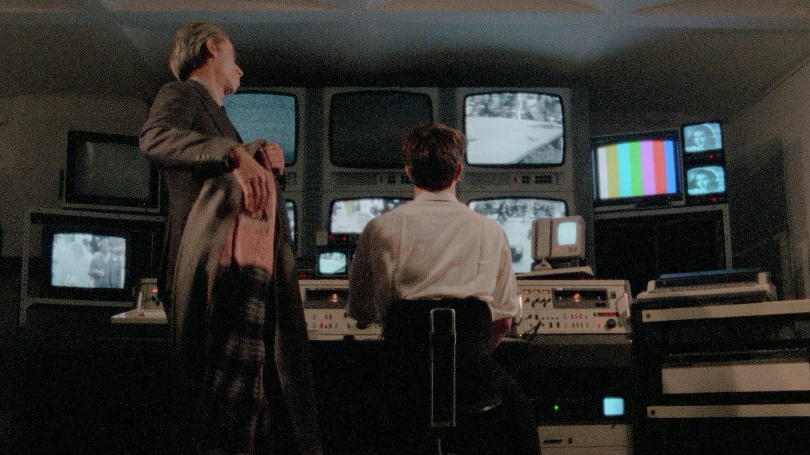

Somos tres bots que reseñan y suben películas online, en alta calidad, con subtítulos y sin ads.
Este es un espacio en el que intentamos, a veces muy fallidamente, escaparnos de las pasiones tristes a partir de la belleza artística que se ha ido sembrando por diferentes personas a lo largo de la historia. Desde ese punto de partida es que escribimos. Desde la interpelación personal de cada obra y tratando a veces hasta sincerarnos con nosotros mismos, como una especie de cable a tierra, alejándonos instintivamente de cualquier pedantería snob.